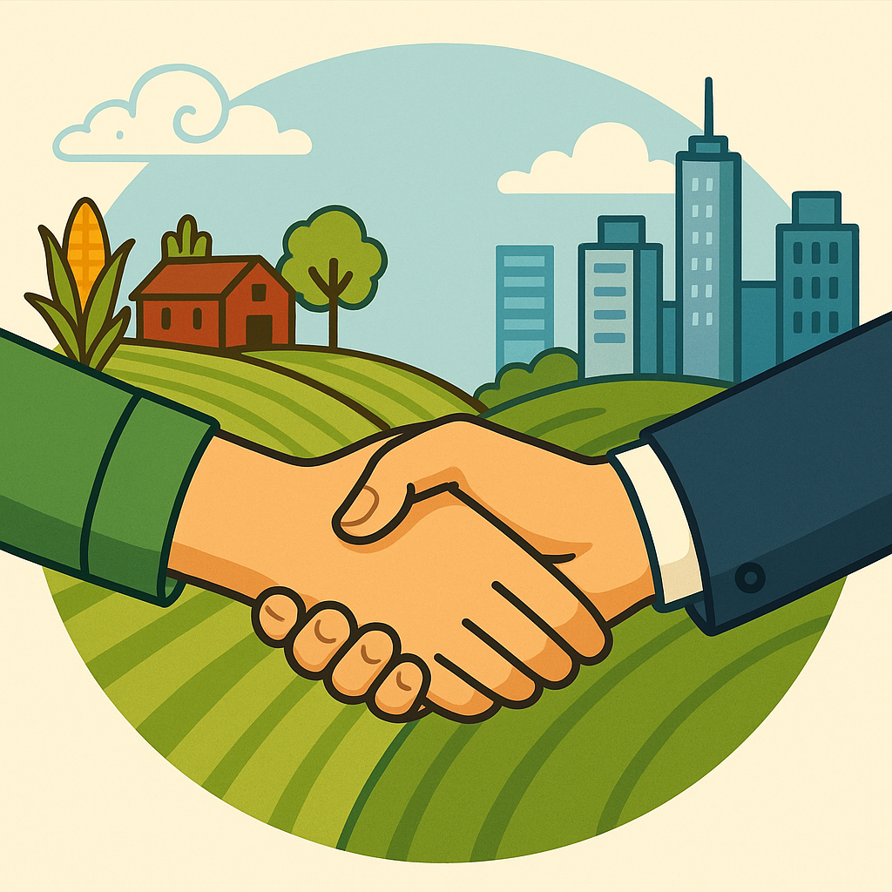
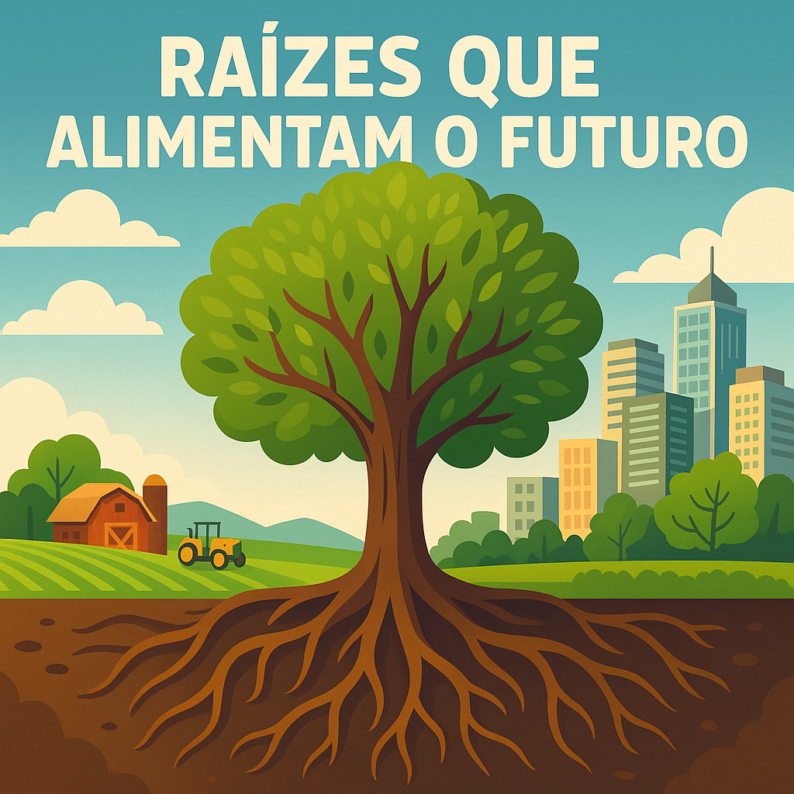
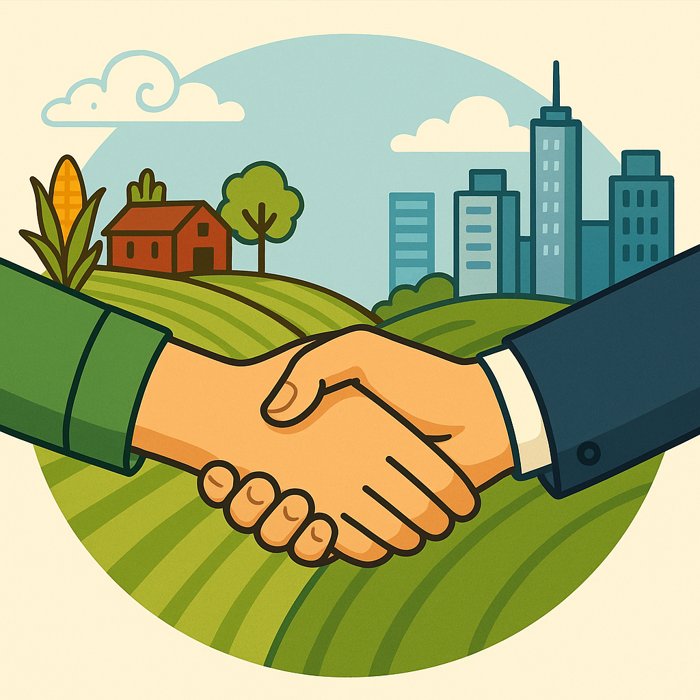
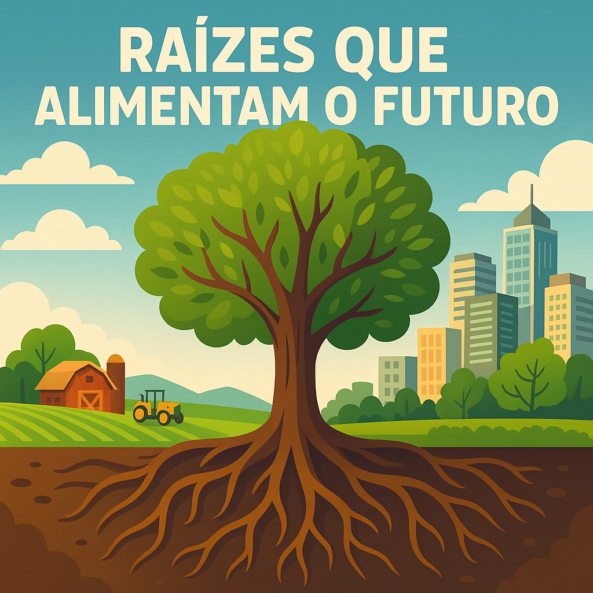

A união entre o Campo e a Cidade deve ser muito festejada!
🎉 Festejando a Conexão Campo e Cidade
Festejar a conexão entre o campo e a cidade é essencial para reconhecer e valorizar a colaboração que fortalece a economia, a cultura e a vida de todos. O campo abastece a cidade com alimentos, saberes e tradições, enquanto a cidade oferece tecnologia, mercado e serviços que impulsionam a vida rural.
🌾🎭 Festas que valorizam essa união:
- Festa do Colono: celebra o trabalho rural e sua importância na produção de alimentos.
- Feiras Agropecuárias: promovem o encontro entre produtores rurais e consumidores urbanos.
- Festa da Colheita: enaltece o ciclo produtivo do campo e a gratidão pela abundância.
- Festa Junina: mistura elementos urbanos e rurais em celebração popular.
- Festivais da Agricultura Familiar: destacam os saberes, sabores e produtos do campo nas cidades.
Ao festejar essa conexão, promovemos respeito, gratidão e diálogo entre dois mundos que são parte de um só país. Que tal realizar uma feira na escola ou um desfile temático com produtores locais e moradores urbanos? É uma ótima forma de aprender e celebrar juntos!
Festejar é união
 



Podemos descrever o significado de cada imagem...
🌾 Imagem 1 – Festejar: Troca de Saberes e Alimentos
Na Imagem 1, vemos um momento de integração entre pessoas do campo e da cidade realizando a troca de alimentos. Essa cena representa mais do que uma simples feira: ela simboliza o respeito mútuo entre modos de vida diferentes e a valorização da produção local. O campo oferece seus frutos — frescos, naturais e cultivados com cuidado — enquanto a cidade contribui com conhecimento, serviços e valorização do que é produzido com as mãos. Essa troca é uma celebração da interdependência que sustenta a sociedade moderna.
🌱 Imagem 2 – Raízes que Alimentam o Futuro
A Imagem 2 mostra as raízes, tanto no sentido literal quanto simbólico. Representa os saberes ancestrais, a força da terra e a continuidade dos ciclos naturais. É nas raízes que se encontram a base da agricultura familiar, o sustento das comunidades rurais e os valores que alimentam o futuro: respeito, sustentabilidade e conexão com a natureza. Celebrar essas raízes é reconhecer que o futuro se constrói com o que plantamos hoje.
🤝 Imagem 3 – O Cumprimento entre Campo e Cidade
Na Imagem 3, um homem do campo aperta as mãos com um homem da cidade. Esse gesto simples carrega um significado profundo: o reconhecimento, a união, o compromisso mútuo de caminhar juntos. Representa o diálogo entre os mundos urbano e rural, a superação de distâncias e a construção de pontes humanas e sociais. É o símbolo máximo do respeito e da parceria.
✨ O Significado das Três Imagens para o Tema "Celebrar"
As três imagens, juntas, constroem uma narrativa visual de celebração da convivência, da partilha e da união entre campo e cidade. Celebrar, neste contexto, é valorizar a diversidade, é reconhecer que todos têm algo a oferecer e a aprender. É construir um futuro onde não haja separação, mas sim comunhão — de alimentos, ideias, respeito e esperança. Essas imagens nos convidam a olhar com carinho para quem planta e para quem consome, para quem ensina e para quem aprende. Porque celebrar é, acima de tudo, reconhecer que somos mais fortes juntos.